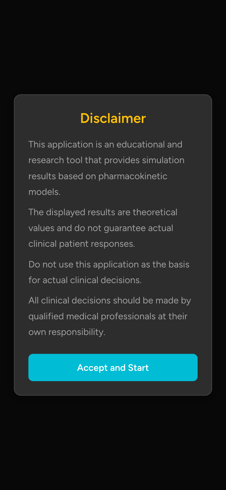
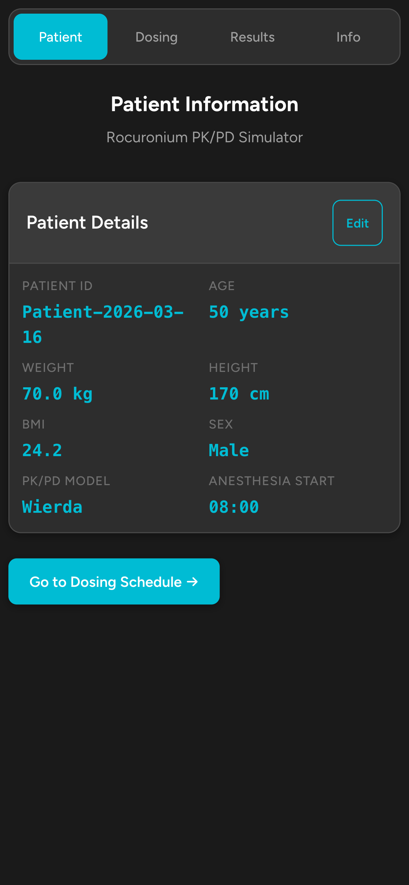
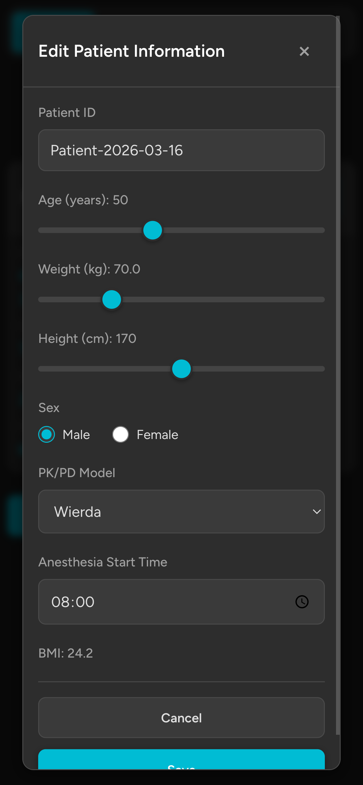
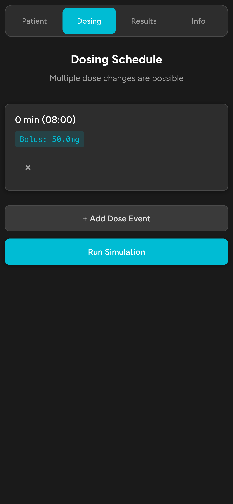
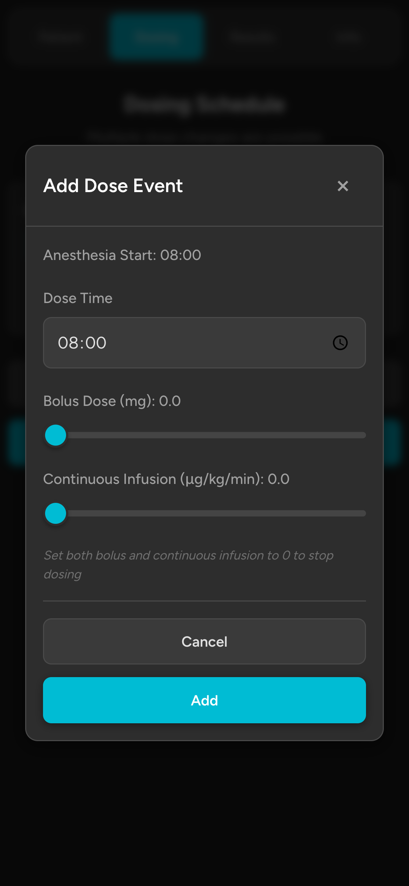
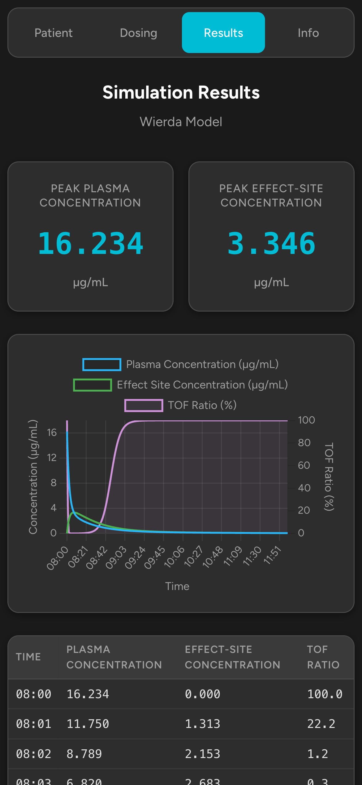
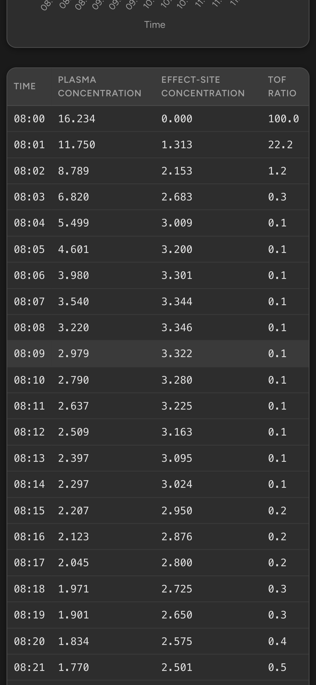
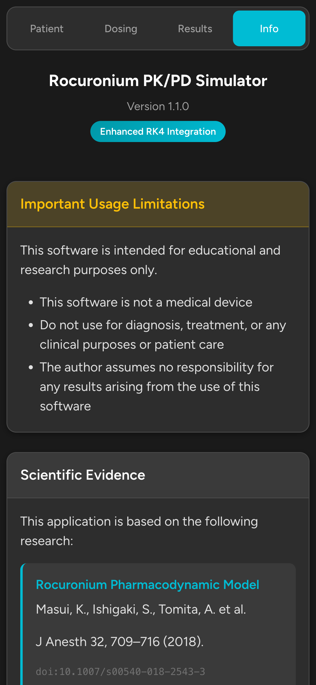

目次
概要 はじめに
インストールと起動 免責事項の確認 患者情報の設定
投与スケジュール
投与イベントの追加 投与パラメータ 投与の停止
シミュレーション結果
サマリーカード 濃度チャート データテーブル
CSVエクスポート PK/PDモデルリファレンス
Wierda モデル Szenohradszky モデル Cooper モデル Alvarez-Gomez モデル McCoy モデル
単位一覧 使い方のヒント トラブルシューティング 免責事項・利用規約
1. 概要
Rocuronium PK/PD Simulator は、非脱分極性筋弛緩薬ロクロニウムの薬物動態（PK）および薬力学（PD）をシミュレーションする教育・研究用 Web アプリケーションです。
ボーラス投与および持続投与後の血漿中濃度、効果部位濃度、ならびに TOF 比（Train-of-Four ratio）の経時変化を予測します。
本アプリケーションは 4 つのタブで構成されています。
Patient
▶
Dosing
▶
Results
▶
Info
タブ
機能
Patient
患者情報（年齢・体重・身長・性別）の表示・編集、PK/PD モデルの選択、麻酔開始時刻の設定
Dosing
投与イベント（ボーラス・持続投与）の追加・編集・削除、シミュレーション実行
Results
血漿中濃度・効果部位濃度・TOF 比のチャートおよびデータテーブルの表示、CSV エクスポート
Info
アプリケーション情報、PK/PD モデルの詳細、開発者情報、免責事項
主な特徴
5 種類の PK モデル（Wierda, Szenohradszky, Cooper, Alvarez-Gomez, McCoy）に対応
Masui et al. (2018) の PD モデルによる TOF 比予測
Enhanced RK4 Integration による高精度数値計算（V1.1.0）
複数の投与イベント（ボーラス・持続投与の変更）に対応
血漿中濃度・効果部位濃度と TOF 比の同時表示チャート
CSV 形式でのデータエクスポート
PWA（Progressive Web App）対応 -- オフラインで使用可能
iPhone に最適化されたダークテーマ UI
2. はじめに
2.1 インストールと起動
ブラウザで直接使用する場合
Safari または Chrome でアプリケーションの URL にアクセスしてください。インターネット接続がある環境であれば、インストール不要で使用できます。
iPhone のホーム画面に追加する場合（推奨）
Safari でアプリケーションの URL を開く
画面下部の共有ボタン（四角から上矢印のアイコン）をタップ
「ホーム画面に追加」を選択
名前を確認して「追加」をタップ
ホーム画面に追加すると、通常のアプリと同様にフルスクリーンで起動し、オフラインでも使用できます。
2.2 免責事項の確認
アプリケーションを起動すると、最初に免責事項のモーダルが表示されます。内容を確認し、Accept and Start をタップして開始してください。

図1: 起動時の免責事項確認画面
重要
本アプリケーションは教育・研究目的専用です。臨床診断や治療の根拠として使用しないでください。すべての臨床判断は、資格を有する医療専門家の責任のもとで行ってください。
2.3 患者情報の設定
Patient タブでは、現在設定されている患者情報がカード形式で表示されます。Edit ボタンをタップすると、患者情報の編集モーダルが開きます。

図2: Patient タブ -- 患者情報の表示

図3: 患者情報編集モーダル
項目
既定値
範囲
説明
Patient ID
Patient-YYYY-MM-DD
任意の文字列
患者識別子（任意設定）
Age（年齢）
50
18 -- 100
PK パラメータの計算に使用
Weight（体重, kg）
70.0
30 -- 200
分布容積・クリアランスの計算に使用
Height（身長, cm）
170
120 -- 220
BMI の計算に使用
Sex（性別）
Male
Male / Female
PK パラメータの計算に使用
PK/PD Model
Wierda
5 モデルから選択
使用する薬物動態モデルの選択
Anesthesia Start Time
08:00
--
麻酔開始時刻（投与タイミングの基準）
補足
BMI は身長と体重から自動計算されます。各パラメータはレンジスライダーで直感的に調整できます。スライダーを動かすと現在の値がリアルタイムで表示されます。患者情報の変更後は Save ボタンで保存してください。PK/PD モデルの選択はシミュレーション結果に大きく影響するため、目的に応じて適切なモデルを選択してください。
患者情報の設定が完了したら、Go to Dosing Schedule ボタンをタップして Dosing タブに移動します。
3. 投与スケジュール
Dosing タブでは、ロクロニウムの投与スケジュールを設定します。ボーラス投与と持続投与を組み合わせた複数の投与イベントを時系列で追加できます。

図4: Dosing タブ -- 投与スケジュール画面
3.1 投与イベントの追加
+ Add Dose Event ボタンをタップする投与イベント追加モーダルが表示される
投与時刻（Dose Time）を設定する（麻酔開始時刻が基準として表示される）
ボーラス投与量（mg）をレンジスライダーで設定する
持続投与速度（ug/kg/min）をレンジスライダーで設定する
Add ボタンで確定する

図5: 投与イベント追加モーダル
3.2 投与パラメータ
パラメータ
範囲
単位
説明
Dose Time
--
時刻
投与を行う時刻。麻酔開始時刻以降の時刻を指定する
Bolus Dose
0 -- 100
mg
ボーラス投与量。レンジスライダーで 1 mg 刻みで調整
Continuous Infusion
0 -- 30
ug/kg/min
持続投与速度。レンジスライダーで 0.1 ug/kg/min 刻みで調整
投与量の目安
ロクロニウムの一般的な挿管用量は 0.6 -- 1.2 mg/kg です。体重 70 kg の患者では 42 -- 84 mg に相当します。持続投与の場合は一般的に 7 -- 12 ug/kg/min 程度です。ただし、これらは参考値であり、実際の投与量は臨床状況に応じて医療専門家が判断してください。
3.3 投与の停止
投与を停止する場合は、停止時刻に新しい投与イベントを追加し、ボーラスと持続投与の両方を 0 に設定します。
これにより、その時刻以降の持続投与が停止され、薬物の消失過程（ウォッシュアウト）がシミュレーションされます。
既存のイベントを削除するには、各イベント右側の削除ボタンをタップします。
投与スケジュールの設定が完了したら、Run Simulation ボタンをタップしてシミュレーションを実行します。投与イベントが 1 つ以上追加されるまで、このボタンは無効化されています。
4. シミュレーション結果
Dosing タブで Run Simulation を実行すると、Results タブにシミュレーション結果が表示されます。
結果画面は、サマリーカード、濃度チャート、データテーブルの 3 つの要素で構成されています。

図6: Results タブ -- シミュレーション結果のチャート表示
4.1 サマリーカード
画面上部に表示されるサマリーカードでは、シミュレーション結果の主要指標を確認できます。
指標
単位
説明
Peak Plasma Concentration
ug/mL
シミュレーション期間中の血漿中濃度の最大値
Peak Effect-Site Concentration
ug/mL
シミュレーション期間中の効果部位濃度の最大値
4.2 濃度チャート
チャートは 2 軸構成で表示されます。左側の Y 軸は血漿中濃度および効果部位濃度（ug/mL）、右側の Y 軸は TOF 比（%）を示します。
X 軸は麻酔開始時刻からの経過時間です。
線の色
パラメータ
Y 軸
青色
血漿中濃度（Plasma Concentration）
左軸（ug/mL）
緑色
効果部位濃度（Effect-Site Concentration）
左軸（ug/mL）
赤色
TOF 比（Train-of-Four Ratio）
右軸（%）
TOF 比の解釈
TOF 比は神経筋遮断の程度を示す指標です。TOF 比 100% は完全な神経筋伝達を意味し、0% は完全遮断を意味します。一般的に、挿管条件として TOF 比 0 -- 5% が推奨され、抜管の基準として TOF 比 90% 以上が推奨されています。
4.3 データテーブル
チャートの下に表示されるデータテーブルでは、各時点の詳細な数値を確認できます。

図7: Results タブ -- データテーブル表示
列名
単位
説明
Time
分（実時刻）
麻酔開始からの経過時間（対応する実時刻も表示）
Plasma Concentration
ug/mL
血漿中濃度
Effect-Site Concentration
ug/mL
効果部位濃度
TOF Ratio
%
Train-of-Four 比
5. CSV エクスポート
Results タブの Export CSV Data ボタンをタップすると、シミュレーション結果を CSV 形式でダウンロードできます。
エクスポートされる CSV ファイルには以下の列が含まれます。
経過時間（分）
実時刻
血漿中濃度（ug/mL）
効果部位濃度（ug/mL）
TOF 比（%）
活用方法
CSV ファイルは Microsoft Excel、Google Sheets、R、Python 等の表計算ソフトやデータ解析ツールで開くことができます。研究データの記録や二次解析に活用してください。
6. PK/PD モデルリファレンス
本アプリケーションでは、5 種類の薬物動態（PK）モデルを選択できます。各 PK モデルに対応する薬力学（PD）パラメータは、
Masui et al. (2018) の研究で検証されたものを使用しています。
参考文献（PD モデル）
Masui K, Ishigaki S, Tomita A, et al. Pharmacodynamics of rocuronium evaluated by the train-of-four ratio and simple twitch height.
J Anesth . 2018;32:709-716. doi:10.1007/s00540-018-2543-3
6.1 Wierda モデル (1991)
Wierda et al. (1991)
構造: 3 コンパートメントモデル
特徴: 初期に開発された基本的な 3 コンパートメントモデルの一つ。多くの後続研究で比較基準として使用されています。
臨床的意義: 標準的な患者におけるロクロニウムの動態を理解するためのベンチマークモデルです。Cooper モデルや Alvarez-Gomez モデルと類似した血漿中濃度プロファイルを示します。
6.2 Szenohradszky モデル (1992)
Szenohradszky et al. (1992)
構造: 3 コンパートメントモデル
特徴: 正常腎機能患者と腎移植患者のデータから構築されたモデル。他のモデルと比較して初期血漿中濃度を高く計算する傾向があります。
臨床的意義: 文献によれば血漿中濃度を過大評価する可能性があります。その結果、効果部位濃度も高く計算され、他のモデルよりも TOF 比の回復を早く予測する場合があります。
6.3 Cooper モデル (1993)
Cooper et al. (1993)
構造: 3 コンパートメントモデル
特徴: 腎機能の影響を比較する研究から得られたモデル。Wierda モデルと比較的類似した動態を示します。
臨床的意義: 腎機能障害患者を念頭に開発された汎用モデルとして、Wierda や Alvarez-Gomez と並んで参照されます。
6.4 Alvarez-Gomez モデル (1994)
Alvarez-Gomez et al. (1994)
構造: 3 コンパートメントモデル
特徴: 成人患者を対象としたモデル。本比較研究では Wierda および Cooper と非常に類似したシミュレーション結果を示します。
臨床的意義: 標準モデルの一つとして広く受け入れられており、複数の研究で妥当性が検証されています。
6.5 McCoy モデル (1996)
McCoy et al. (1996)
構造: 2 コンパートメントモデル
特徴: 選択肢の中で唯一の 2 コンパートメントモデル。PD パラメータ（ke0）は年齢の影響を受けません。
臨床的意義: モデル構造が単純であるため計算が容易ですが、特に投与後 30 分以内の分布相の表現において 3 コンパートメントモデルと異なる場合があります。他のモデルよりも高い効果部位濃度を計算する傾向があります。
モデル選択に関する注意
各 PK モデルは異なる患者集団や研究条件に基づいて構築されています。モデルの選択によってシミュレーション結果が異なるため、結果の解釈には注意が必要です。研究や学習の目的に応じて適切なモデルを選択してください。
7. 単位一覧
項目
単位
備考
ボーラス投与量
mg
0 -- 100 mg、1 mg 刻み
持続投与速度
ug/kg/min
0 -- 30 ug/kg/min、0.1 刻み
血漿中濃度（Cp）
ug/mL
--
効果部位濃度（Ce）
ug/mL
--
TOF 比
%
0 -- 100%
体重
kg
30 -- 200 kg
身長
cm
120 -- 220 cm
年齢
歳
18 -- 100 歳
BMI
kg/m2
自動計算
シミュレーション時間
分
経過時間と実時刻の両方で表示
8. 使い方のヒント
基本的なワークフロー
Patient タブで患者情報と PK/PD モデルを設定してから、Dosing タブで投与スケジュールを入力してください
患者情報を変更した場合は、Dosing タブで再度 Run Simulation を実行してシミュレーション結果を更新してください
複数のモデルで結果を比較する場合は、Patient タブでモデルを切り替えてシミュレーションを再実行してください
投与スケジュールの設定
レンジスライダーを動かすと、現在の値がラベルにリアルタイムで表示されます
複数の投与イベントを追加することで、ボーラス追加投与や持続投与速度の変更をシミュレーションできます
投与を停止する場合は、停止時刻のイベントでボーラスと持続投与を両方 0 に設定してください
投与イベントは時系列順に自動的にソートされます
結果の解釈
血漿中濃度（Cp）はボーラス投与直後に急上昇し、その後分布により低下します
効果部位濃度（Ce）は Cp に遅れて上昇し、緩やかなピークを形成します
TOF 比は Ce の上昇に伴い低下し、筋弛緩の程度を反映します
持続投与を停止した後の薬物消失過程と TOF 比の回復を観察できます
PWA としての使用
iPhone の Safari でホーム画面に追加すると、オフライン環境でもアプリが動作します
フルスクリーンモードで表示されるため、ブラウザの UI による画面の圧迫がありません
すべての計算はブラウザ内でローカルに実行されます。データの外部送信は一切ありません
9. トラブルシューティング
アプリが起動しない
ブラウザのキャッシュをクリアして再読み込みしてください
Safari または Chrome の最新バージョンを使用してください
PWA として追加している場合は、一度削除してホーム画面に再追加してください
Run Simulation ボタンが押せない
投与イベントが 1 つ以上追加されている必要があります。Dosing タブで + Add Dose Event から投与イベントを追加してください
チャートが表示されない
オフライン環境で初めて使用する場合、Chart.js ライブラリがキャッシュされていない可能性があります。一度オンラインでアプリを開いてからオフラインで使用してください
画面を縦向きにして表示を確認してください
シミュレーション結果が予想と異なる
Patient タブで正しい患者情報（体重、年齢等）が設定されているか確認してください。持続投与速度は ug/kg/min のため体重が計算に影響します
PK/PD モデルの選択を確認してください。モデルによって結果が異なります
投与イベントの時刻が正しい順序で設定されているか確認してください
Szenohradszky モデルは他のモデルより高い初期血漿中濃度を算出する傾向があります
CSV ファイルが文字化けする
CSV ファイルは UTF-8 エンコーディングで出力されます。Excel で開く場合は「データ」タブの「テキストファイルの取り込み」機能を使い、文字コードに UTF-8 を指定してください
10. 免責事項・利用規約
重要な注意事項
本アプリケーションは教育および研究目的 でのみ使用してください
本ソフトウェアは医療機器ではありません
臨床診断、治療、患者ケアの根拠として使用しないでください
すべての臨床判断は、資格を有する医療専門家の責任のもとで行ってください
計算結果は薬物動態モデルに基づく理論値であり、実際の臨床における患者反応を保証するものではありません
本アプリケーションの使用により生じたいかなる損害についても、開発者は一切の責任を負いません
PK/PD モデルの限界
本アプリケーションで使用される薬物動態/薬力学モデルは、特定の患者集団のデータに基づいて構築されています。
モデルの予測精度は、患者の個体差、病態、併用薬、その他の臨床的要因によって影響を受けます。
シミュレーション結果は理論的な参考値として解釈してください。
データとプライバシー
本アプリケーションは、ユーザーが入力したデータの収集、保存、送信を一切行いません。
すべての計算はブラウザ内でローカルに実行されます。
参考文献
Masui K, Ishigaki S, Tomita A, et al. Pharmacodynamics of rocuronium evaluated by the train-of-four ratio and simple twitch height. J Anesth . 2018;32:709-716.
Wierda JM, et al. (1991) -- Rocuronium PK model
Szenohradszky J, et al. (1992) -- Rocuronium PK model
Cooper RA, et al. (1993) -- Rocuronium PK model
Alvarez-Gomez JA, et al. (1994) -- Rocuronium PK model
McCoy EP, et al. (1996) -- Rocuronium PK model
Info タブについて
アプリケーション内の Info タブでは、バージョン情報（V1.1.0 Enhanced RK4 Integration）、使用制限事項、科学的根拠、
計算モデルの詳細、開発者情報、プライバシーポリシーを確認できます。

図8: Info タブ -- アプリケーション情報